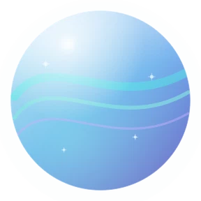
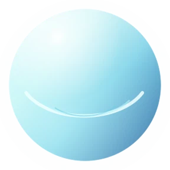
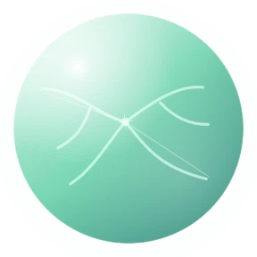
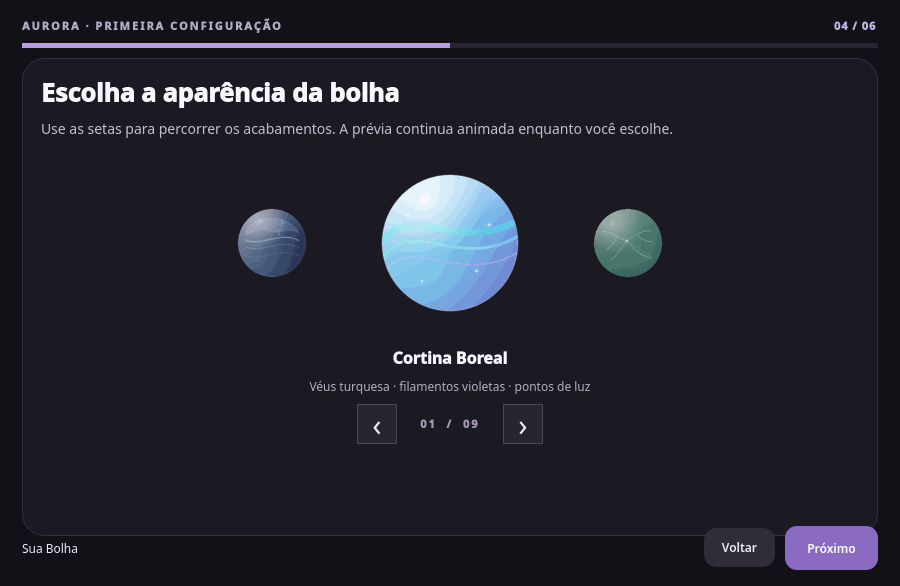

Fale naturalmente
Chame a Aurora por voz e continue a conversa sem precisar repetir o ritual a cada frase.
VOZ · CONVERSAAurora vive na sua área de trabalho. Uma voz, uma bolha e um jeito mais natural de interagir com o computador.

A Aurora foi criada para conversar, ajudar e agir no computador sem virar mais uma janela no caminho. Ela aparece quando você chama — e volta ao seu canto quando termina.
Explore o projeto no GitHub ↗Chame a Aurora por voz e continue a conversa sem precisar repetir o ritual a cada frase.
VOZ · CONVERSAUma bolha flutuante acompanha sua rotina com estados visuais que mostram quando está ouvindo ou trabalhando.
GNOME · WAYLANDDefina como ela chama você, o nome de ativação, o jeito de conversar, a aparência, a voz e os sons. O nome personalizado pode ser treinado localmente.
PERFIL · VOZ · APARÊNCIAUMA BOLHA, DEZ ATMOSFERAS
Cada acabamento tem cor, luz e pequenos detalhes próprios. A forma continua familiar; a personalidade muda com você.


Véus turquesa · filamentos violetas
Três cortinas translúcidas deslizam em ritmos distintos; pequenos pontos de luz percorrem o horizonte polar.
FEITA DE DETALHES
Da primeira saudação à escolha da voz: o onboarding usa tema escuro, cartões organizados e transições laterais suaves.

UM PROJETO INDEPENDENTE
A Aurora é desenvolvida e escrita com auxílio de inteligência artificial, e testada e orquestrada por Nylofofin. É um projeto em evolução, feito com transparência sobre suas capacidades, limites e escolhas técnicas.
Hoje, o foco é o desktop Fedora Workstation com GNOME e Wayland. Áudio, reconhecimento de fala e respostas são processados localmente. Pesquisas enviam o texto consultado à web; modelos opcionais são baixados quando escolhidos.
O Aurora Studio guia a configuração em etapas: identidade e preferências de conversa ficam claras, e um nome de ativação fora do vocabulário pode receber um perfil acústico local. As gravações são descartadas após a análise; as escolhas ficam neste computador e podem ser alteradas depois.
Para experimentar, baixe o RPM Aurora Studio na página de lançamentos. Ele verifica o ambiente, orienta a instalação e permite personalizar a assistente; outros ambientes ainda não são oficialmente suportados.
Vela Vigil · Fedora Workstation · GNOME · Wayland